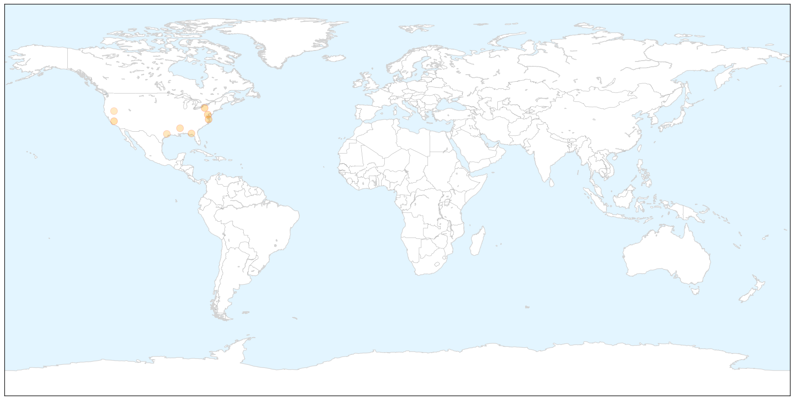
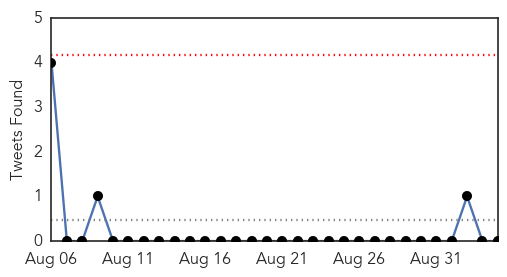
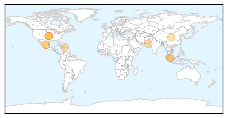

West Nile Virus
30-Day Web Trend
0 alerts, 0 warnings

30-Day Twitter Trend
0 alerts, 0 warnings

Article Locations

X

Article Confidences

Top Articles:
- 0.991
- West Nile Virus Infections in California at All-Time High (Map of Cases by County)
- 0.985
- Sentinel Chickens Test Positive for West Nile Virus in Delaware
- 0.968
- West Nile virus at highest level ever in California mosquitoes
- 0.966
- Sentinel chicken tests positive for West Nile virus in Delaware
- 0.837
- Third West Nile Virus death confirmed in Miss.
- 0.835
- West Nile strikes Tallahassee resident Bob Lotane
- 0.758
- 14th case of West Nile confirmed in Montgomery County
- 0.690
- No, Burning Man Was Not Infected With West Nile Virus
Top Tweets:
-
No tweets found for Sep 04, 2014
Dengue Fever
30-Day Web Trend
0 alerts, 0 warnings

30-Day Twitter Trend
0 alerts, 0 warnings

Article Locations
Article Confidences

Top Articles:
- 0.998
- Siberian Medical Scientists to Help Asian Colleagues Fight Dangerous Infections
- 0.994
- Amid Ebola, Progress on Another Epidemic
- 0.983
- Japan Battles With Dengue Outbreak In Tokyo; Yoyogi Park Closed
- 0.972
- Fuad: No reason to close schools in Belmont after CHIKV confirmed
- 0.953
- the edge of knowledge
- 0.914
- Dengue vaccine Phase III trial shows good results
- 0.906
- Severe strain of dengue causes spike in deaths, says paper
- 0.886
- First Dengue Vaccine Set to be Available in 2015
- 0.769
- Dengue vaccine shows promise in Latin America
- 0.747
- Final Trial Confirms Efficacy of Dengue Vaccine
Top Tweets:
-
No tweets found for Sep 04, 2014